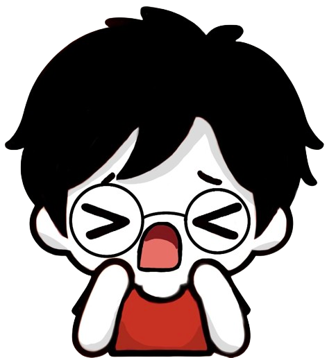
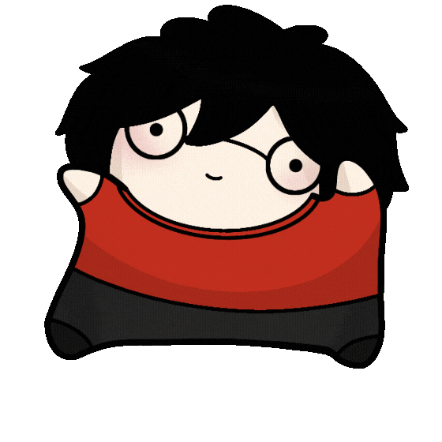
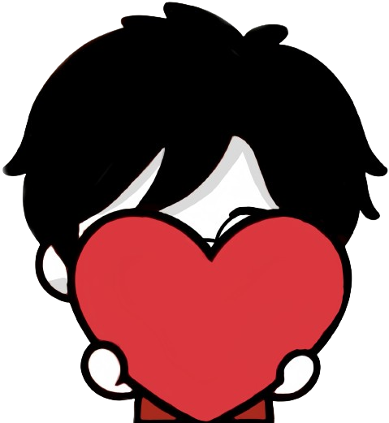

← Sección cartas



WewinVT · Serie 1
W
W
Sobre coleccionable
✦ ✦ ✦
3 cartas de la comunidad
Edición comunidad
Toca para abrir
Toca el sobre para abrirlo
Revelar todas
Abrir otro sobre
🔊
Sobres abiertos:
0
modo prueba:
aleatorio
garantizar Rara+
garantizar Épica+
garantizar Legendaria